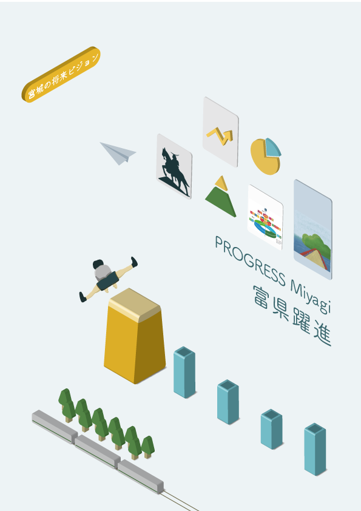
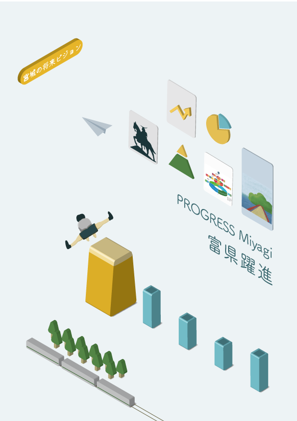

- genre
- style
- tool
- season
グラフィックデザイン
クライアントワーク
illustrator｜cinema4D
2020.10.01～2021.01.20
県政運営に興味を持つきっかけづくりを。
宮城県の県政運営の指針をまとめた冊子「新・宮城の将来ビジョン」で、表紙のデザイン案を採用していただきました。
宮城県庁の担当部署(震災復興政策課)とのディスカッションを定期的に重ねながらアイデアの方向性を探り、今後10年たっても色あせないビジュアルを目指しました。
1 week 県庁の方々とのミーティング・ヒアリング
3 week 方向性の絞り込み
3 week デザイン制作
1 week 県庁の方々へプレゼンテーション
1 week ブラッシュアップ
新・宮城の将来ビジョンとは
宮城県の県政運営の指針をまとめた冊子「新・宮城の将来ビジョン」における、表紙のデザインを決める学内のコンペティションに参加しました。
宮城県庁の担当の方とのディスカッションを定期的に重ね、約3 か月かけて制作いたしました。県民が県政運営に興味を持つきっかけづくりを目的とし、今後10 年 たっても色あせないビジュアルを目指しました。
- RELATED PAGE -
-「新・宮城の将来ビジョン」表紙決定 宮城大学
-宮城の将来ビジョン（平成29年3月改定）について
-新・宮城の将来ビジョン - 宮城県公式ウェブサイト
宮城県の未来をつくる5つの柱とSDGs
表紙を制作するにあたって、冊子内で記載している情報を集約したデザインしたいと考えました。そこで、県の指針のキーワードとなっている「宮城県の未来を つくる5 つの柱」と「SDGs」をモチーフにして構成を考えました。
未来へ向かうデザイン
要素が整然と並ぶ様子で、県民の多様性とその連携、力強く未来を向いている姿をイメージしています。
また、立体的な表現にすることで、没入感を出しています。この本を手にとった人が県の将来を自分事として捉え、知って、考えるきっかけの一つになってほしいと考えました。
-
多様性
-
連携
-
没入
-
前進
リアルな質感の表現
デザインの第一段階ではillustratorを用いて立体表現をしましたが、最終稿ではCinema4Dを用いてデザインを改正していきました。これによって、オブジェクトのよりリアルな光や影、質感の表現を目指しました。
決定までの過程として、以下の8案も制作しました。
 
